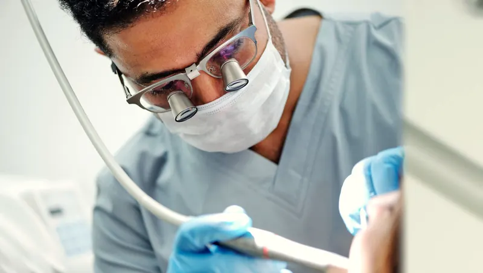

Fillings
The right filling for the job
Decay is removed and the tooth is filled. Fillings also repair cracked teeth and teeth worn down by grinding or nail biting.

There are three common filling materials. The best choice depends on the size of the repair.
White composite
Ideal for small to medium cavities, with a natural look.
Hybrid ceramic onlays and inlays
More durable than composite, bonded to the tooth, and very natural looking. The ideal choice for larger fillings.
Silver and gold
Common in the past and rarely done now. They are dark, do not bond to the tooth, and need more tooth removed.
Featured
Same day crowns and onlays
Lab made restorations can take days or weeks. CEREC makes yours in the office, in one visit.

CEREC pairs a 3D oral scanner with design and fabrication in the office. You get a precise fit without a temporary or a second appointment.
1. Scan
A 3D oral scanner captures your tooth. No impression tray.
2. Design
Your crown or onlay is designed in the office with CEREC CAD/CAM.
3. Make and place
It is made in the office and placed the same day.
Materials
Emax and zirconia are the two main materials for permanent crowns and onlays.
Root canals
Save the tooth
A root canal treats the pulp when it becomes inflamed or diseased. The pulp is the soft tissue inside the tooth.
The diseased pulp is removed. The pulp chamber and canals are cleaned and sealed.
Most patients feel little or no discomfort. A restored tooth can last almost as long as the healthy original.
Extractions
Only when it is right
Extractions are decided case by case. Bone grafting is done when it is needed.
Common reasons include a fractured tooth, loose baby teeth, wisdom teeth, and severe decay. Some extractions are part of orthodontic treatment.
Missing tooth replacement
Fill the gap
Replace one tooth or many. Dr. Desai will explain which option suits your mouth.

Implants
A titanium post is placed in the jaw bone and works like a tooth root. It can hold a crown, several crowns, or a snap fit denture. Implants are planned with 3D imaging, which makes placement safe, predictable, and fast.
Bridges
Artificial teeth bridge the gap and attach to the teeth on either side. A bridge suits only certain cases.
Partial and full dentures
Removable teeth that restore your smile and make eating and speaking easier. They take some time and patience to get used to.
Ready when you are
Call the office, or send a request and the team will call you back.